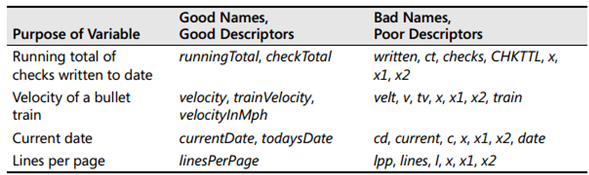

Review: Code Complete
Code Complete, 2nd Edition by Steve McConnell is a comprehensive piece of literature in the field of software development and construction.

Code Complete 2nd Edition by Steve McConnell is a comprehensive piece of literature in the field of software development and construction. It explains ideas and concepts pertaining to organization of code, programming practices and necessary guidelines for every developer and supports them with relevant numerical statistics and references. The book takes an extensive approach on each topic of the software construction and related processes, hence this review provides high level details for the reader to obtain an understanding of it. The good thing about this book is that it contains a chapter encompassing the high level themes of the whole book.
The book divides into seven parts or sections each including some chapters with detailed insight and informative perspective into the components that are absolutely essential for the Software Construction process.
PART 1: Laying the Foundation
The author opens up the term ‘Software Construction’ and identifies all its aspects and constituents. It depicts a series of activities and tasks that help the developer focus on the software construction phases. Construction does not only involve coding, as is the common misconception. Detailed design, planning, unit testing and integration are also part of the activities of software construction. The author talks about the need and significance of software construction as huge and central part of the software development process. It ensures improvement of the developer’s programming practices and the high quality source code is a direct consequence of the requirements specification and architecture. Software metaphors are used to comprehend the software development process in terms of common activities that we encounter in daily life. Software penmanship, Software farming, software construction are some metaphors that are brought to completion with the use of proper tools and techniques. Problem definition, requirements analysis, architecture analysis are some tasks better done in the construction phase. The practice to be followed during the construction phase is of utmost importance. It includes selecting the appropriate programming language and conventions.
PART 2: Creating High Quality Code
Main focus is on design which is the concept of transforming a specification into a working piece of software. Several design challenges are faced in the construction process. Design is not definitive every time and gives a non-technical concept of the software process. The primary purpose of the code is to manage complexity. It means to identify the essential and accidental difficulties and deal with them in the best possible technical way. The author describes the preferred traits that an internal design should have. Levels of design are discussed where the design of a complete system is broken down into the design of the internal classes and sub programs. Abstraction is supported by high quality code and it can be interpreted by other developers in any point in time. Code is a very general term for the backbone of the software. Relations between classes and routines in a software should be loosely coupled. Designing and prototyping practices should be based on complexity and nature of the general design patterns of code. Classes and subroutines of high quality software have good level of abstractions and assumptions. The aim of classes should be to decrease complexity. The chapter on pseudocode programming process includes translating pseudocode with sufficient information into code. Good commenting is achieved when high level pseudocode is not processed into code.
PART 3: Variables
Variables are important in building and configuring the code base from scratch. The user must know what type of data he wants the variable to deal with and then the suitable declaration and initialization practices to go along with your programming practice. All references must be kept track of and a variable must have minimum scope to improve performance of the software. Persistent and single purpose variables may be used. Variable naming should be done in a way that it accurately represents the entity for which the variable is responsible. Names also depend on the use of variables in functions, statuses or temporary storage. Over the years developers have come up with naming conventions so there is a standard for variable naming in known situations. The chapters provide a hands on approach for using fundamental data types and familiarizing oneself with the complex ones and derivative types.

PART 4: Statements
This section of the book covers everything related to statements. Statements may be function calls or declarations happening in a single line of code usually. The author talks about code management and organization as being equally important as writing good code. Statements must be in a defined order so they are executed in that way. Dependencies should be identified and minimized. Related statements may be grouped together. If statements provide greater control on the code and includes conditions and exceptions in the form of statements. It is particularly useful in unit testing. Chains of statements concept can be achieved through if-then-else. Similarly, case statements provide execution of some function calls upon successful occurrence of a specific case. Conditional structures are meaningful. Programming languages come with an array of control statements or loops and the chapters describe situations where they would be most appropriate. Loop variables and nesting is important in achieving simplicity in loops. Recursion and go-to statements fall under the unusual control structures. The author also gives insight into indexed tables and other table structures as part of the statements process. Code complexity is directly related to the use of these structures. Developer should keep in mind all possible paths the code can take and then refactor.
PART 5: Code Improvements
There is always room for improvement in code. Measures of software quality are used to assure the correctness, usability, efficiency, reliability, integrity, adaptability, accuracy, robustness. This is at developer level. Users are mostly concerned with external measures of quality. These include maintainability, flexibility, portability, reusability, readability. Software quality engineering is applied to improve the quality of software. The author discusses related concepts such as collaboration between developers and quality engineers, repeated debugging of code, repair and refactoring, and maintenance at code level in the form of tuning as some methods for defect prevention. Each chapter of these concepts provides details of their need, importance and applications. The author thoroughly focuses on setting goals and objectives and meeting them to their completion. Similarly, prioritization of these goals is equally important as developers and testers need to follow a timeline to deliver their product. The general principle of software quality is the core value here. Formal inspections and pair programming are common practices for this.
PART 6: System Considerations
This section is concerned mostly with management of the construction process as a whole. The author discusses the issue of size of the project or program and how its increase can lead to decrease of program quality, productivity and development. Communication is a significant factor in determining the process and relevant conventions as data is lost if the scalability factor is not regularly checked. More resources have to be allocated for managing communication. Then there is the case of errors. A large project will usually more number of logic or syntax errors in the code. Process overheads have been developed which account for the increase in quality and decrease in development time. This section throws light on the basic tools essential for developers and various integrations processes and techniques and their importance. The key is to pick the correct process depending on the type of software.
PART 7: Software Craftsmanship
The book concludes with chapters included in the final part. Once code is written, the job of developer is not finished yet. Structuring of the code including good layout styling and following the fundamental theorem of formatting is essential. The author defines and explains several layout techniques. Comments are as important in understanding the code as the actual code itself. Hence, it is necessary to adopt good commenting practices which promotes readability of the code. The author focuses on code which is able to document itself to much extent without the help of eternal documentation. Moving away from the software, the chapters also contain the characteristics of a developer and his attitude which can bring about positive change in the software system. Humility, honesty, good communication, curiosity have outweighed aptitude at several instances. The developer should have a strong motivation and willingness to learn at every instance of the process, make mistakes and learn from them. Developers sometimes have to work individually and sometimes in a team. The real craftsmanship lies in gaining a skill and having the ability to gain perspective on it.
Fin.
Let's keep the conversation going
If something here resonated, I'd genuinely like to hear from you.
Get in touch